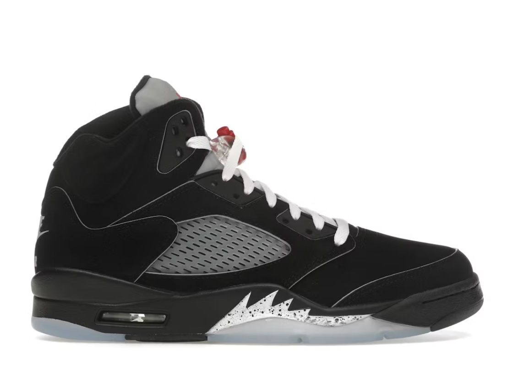

Air Jordan 5 – Shark teeth i mustangowa legenda
Air Jordan 5 z 1990 roku, wizja Tinkera Hatfielda inspirowana myśliwskim samolotem P-51 Mustang: agresywne shark teeth (zęby rekina) na midsole, przezroczysta podeszwa z refleksyjnym 3M dla nocnej widoczności, mid-top konstrukcja z uszami dla pull-tab. MJ w nich grał pamiętne playoffy 1990, w tym 69 pkt vs Cavs (rekord Bulls). Technologia: Nike Air bag w pięcie dla maksymalnego bounce’u, lekka skóra + nubuck, fighter jet silhueta z flame graphics. Kolory “Grape” (fioletowo-emerald), “Metallic” (srebrno-czarne), “Fire Red” czy “Bel Air” zachwycają purystów – “Grape” z 1990 to holy grail sneakerheadów.
Detale: laser printed Jumpman, reflective tongue, molded midsole z teksturą. Hatfield pominął Swoosh dla czystego Jumpmana. Kampania z Spike’iem Lee ewoluowała, a AJ5 zadebiutowały w erze dominacji MJ (pierwszy title w 1991). Kulturowo: ikona lat 90., ulubione w rapie (Biggie, Tupac), inspiracja dla Dior Jordan 1 (ale AJ5 vibe). Retro jak “Top 3” pack 2020 z lepszymi materiałami. Ceny: 250-5000 USD za OG. Perfekcyjne na basket (super cushioning), casual (z joggerami) czy dropy hypebeastów. Waga tylko 400g, oddychające panele. Konserwacja: unikaj słońca dla 3M, dedykowane cleanery. AJ5 to szczyt lat 90. – drapieżny design, historia zwycięstw MJ, łącznik sportu z kulturą ulyczną. Shark teeth gryzą asfalty, a Mustang spirit pcha do przodu. Legenda dla tych, co żyją szybko i stylowo!
